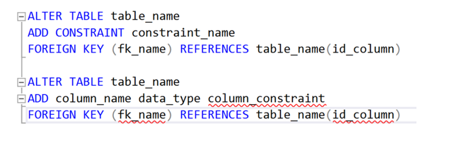
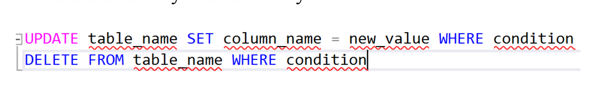
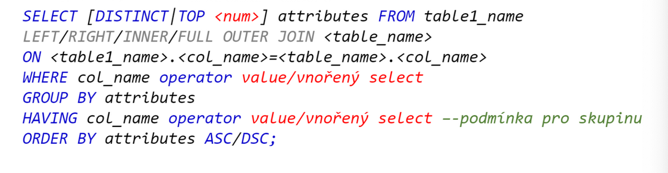

Jazyk-SQL-DDL-DML-prikazy
Otázky
Co je to SQL
DDL
DML
DQL
příklady příkazů u každého
SQL
SQL je Structure Query Language
dotazovací jazyk, který umožňuje přístup a srávu DB
příkazy nejsou senzitivní --> neřeší velká malá písmena
každý příkaz je zakončen ;
DDL
data definition language
soubor příkazů, kterými se tvoří/definuje databáze
CREATE - vytváří objekt v DB --> database, table, view...
ALTER - upraví vytvořenou strukturu DB --> alter table...
DROP - smaže určitou tabulku/záznam
RENAME - přejmenuje objekt DS
TRUNCATE - smaže všechny data v tabulce

DML
Data manipulation language
soubor příkazů, který slouží k manipulaci dat dané databáze
INSERT - vloží data do tabulky
UPDATE - aktualizuje již vytvořené záznamy v tabulkách
DELETE - vymaže záznamy v tabulkách

DQL
Data query language
SELECT --> získává data z tabulek
